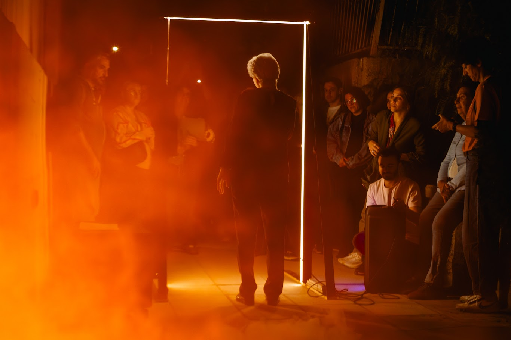
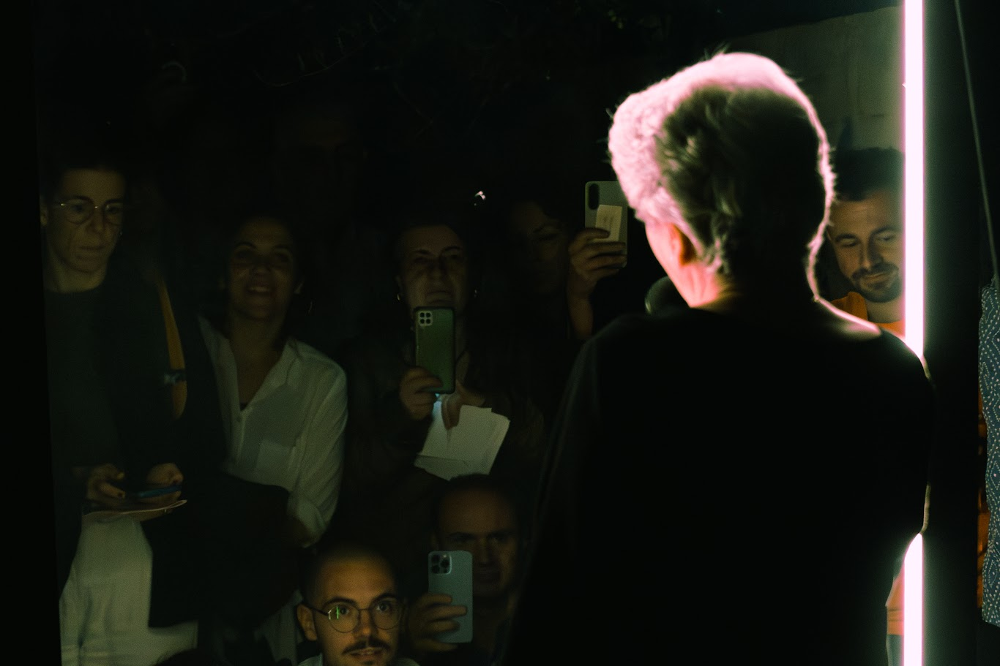
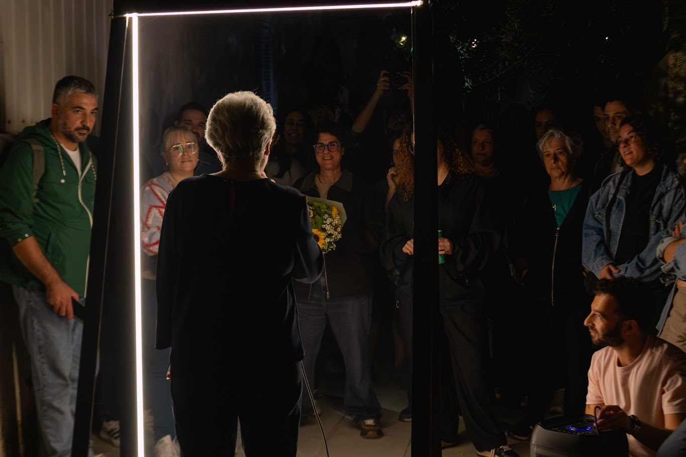
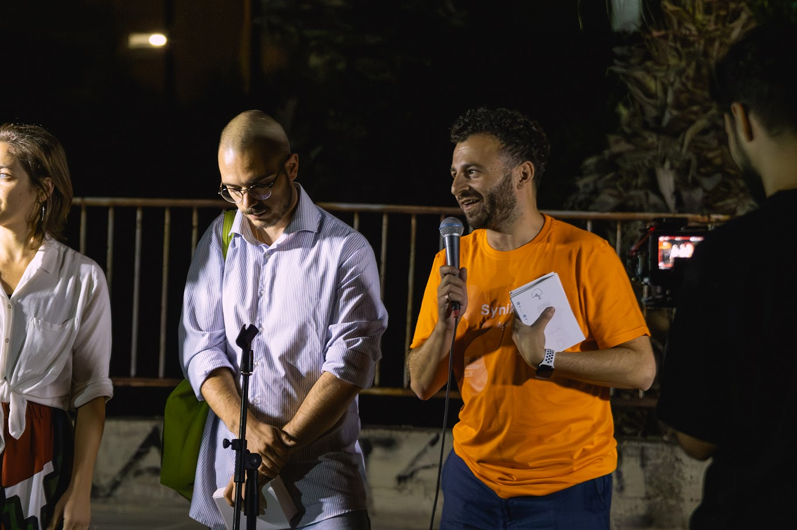
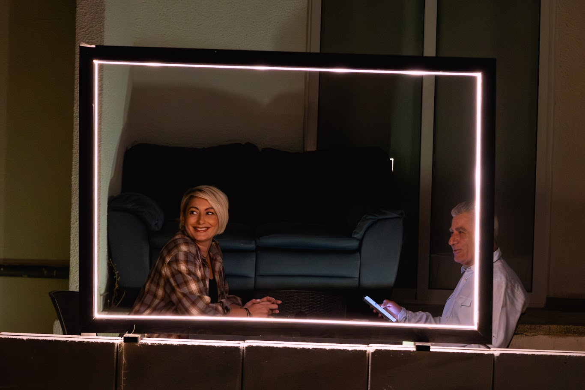
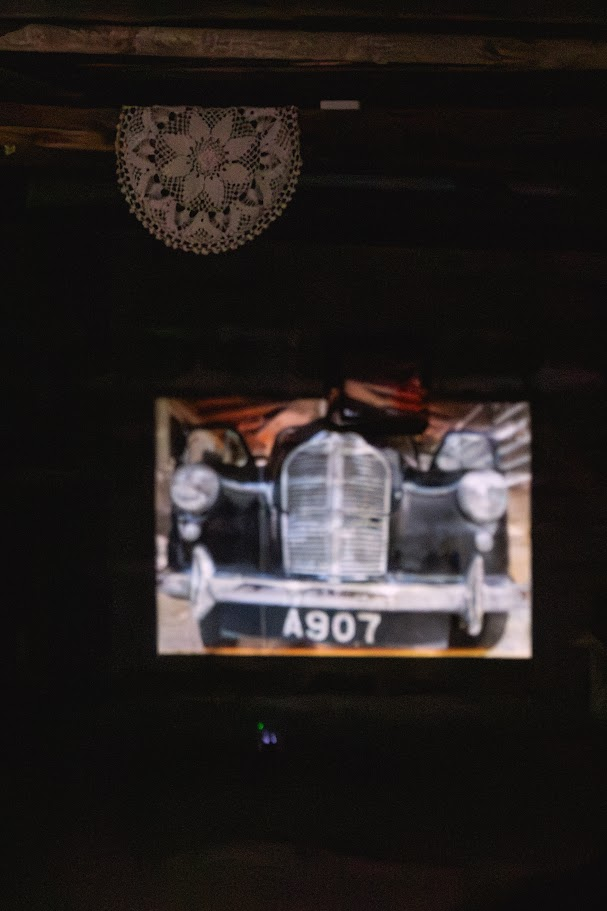
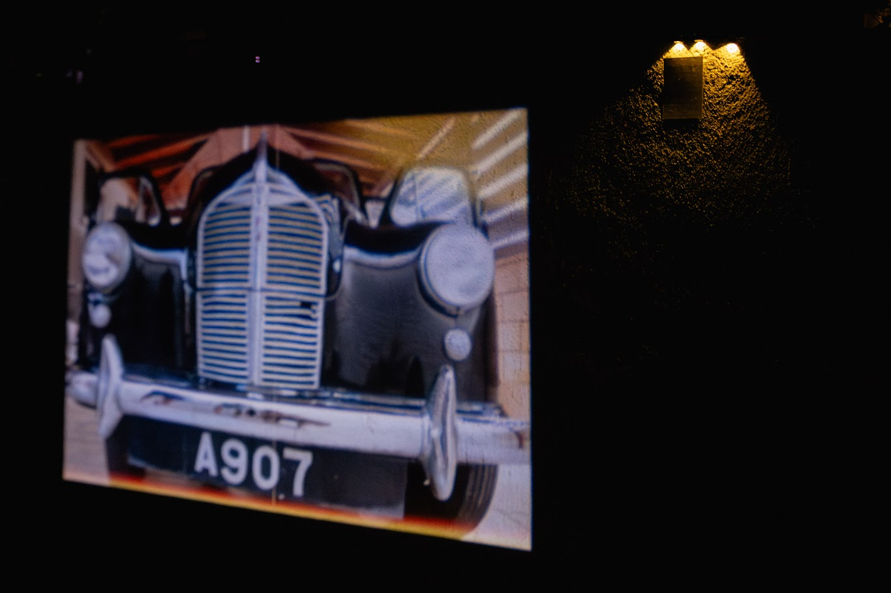
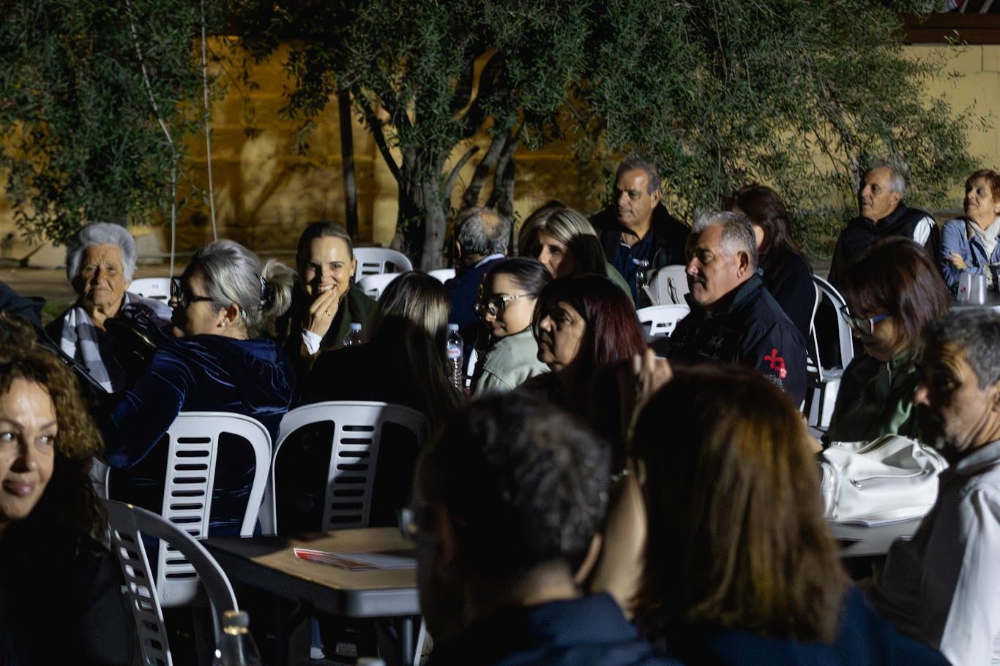

Memory Forms: The paths we walk
2026
Memory Forms: The paths we walk is a participatory procession through the Agioi Anargyroi refugee neighbourhood in Larnaca, temporarily reimagining selected locations as villages from the Famagusta region, from which residents and their families were displaced in 1974.
Illuminated frames mark these locations, where residents share personal stories. Moving from one location to the other, visitors encounter a living archive of places, voices and memories embedded within the neighbourhood.
Through collective movement, storytelling and temporary spatial interventions, the procession creates an alternative map of the neighbourhood, connecting the geography of the former villages with the everyday spaces of the present.
The work was developed during a four-week artistic residency in Larnaka, Cyprus, in October 2026, as part of MedSEA – Socially Engaged Arts in the Mediterranean Area.
The residency was hosted by Larnaka 2030 – European Capital of Culture, within a European cooperation project implemented in partnership with Al Badil (Tunisia), Liv.in.g. (Italy) and Busart (Greece), co-funded by the European Union through the Creative Europe programme.
Additional financial support: Nikšić 2030 – European Capital of Culture.



Stop 01 — Vadili
Frame construction: A. G Efthymiades Electrical Installations LTD



Mahala Art


Stop 02 — Kóma tou Gialoú
Moderator: Nayia T. Karacosta



Stop 03 — A907
A907 tells the story of a 1951 Austin A40 Devon that has remained with a family for more than six decades. In 1974, during the events that divided Cyprus, a five-year-old boy and his family arrived at their new home in this vehicle.
Through a recorded conversation with him, accompanied by photographs and visual documentation, the work explores the relationship between personal memory, displacement, and the objects that quietly preserve family histories.
Today, the family hopes to use the same car for their children's weddings, transforming a vehicle once associated with an uncertain journey into a symbol of continuity, belonging, and new beginnings. Story and voice: Z.A. (Thank you!)


